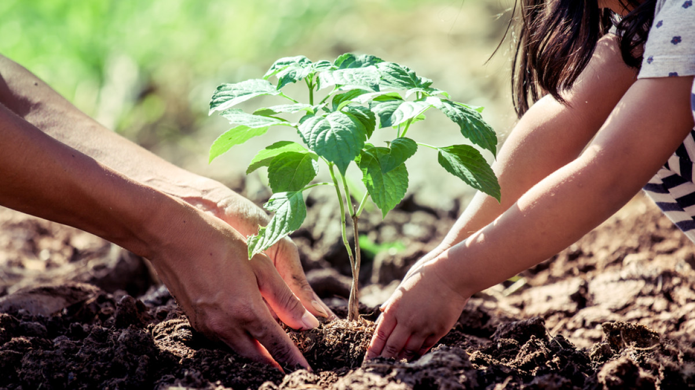
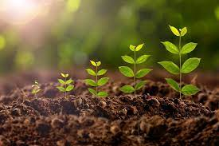
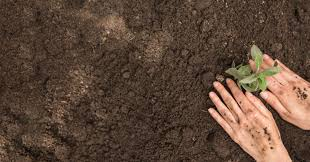

INTRODUCTION
Tree planting is the process in which tree seedlings are transplanted generally for forestry, land reclamation, or landscaping purposes. Tree plantation is very necessary because trees provide oxygen to the environment and make the air quality better. If more trees are planted, then the world's environment will become a safer place to live in. Tree plantation also reduces pollution, thus making the life of future generations secure. Through this tree plantation essay, one will have a clear overview of this topic. The tree is the key to a pollution-free environment for a long time because they are responsible for providing oxygen, improving the quality of air, climate amelioration, conserving water, soil preservation, and supporting wildlife. Due to all these reasons, tree plantation has become necessary in the present scenario as pollution is at a peak. Tree plantation is the only way to control pollution to some extent.
AFFORESTRATION IN TREE PLANTATION
In silviculture, the tree plantation activity is known as afforestation or reforestation. This process involves planting seedlings in an area where the forest has been damaged by a fire, disease, or harvested or got destroyed by some human activity. As we know that pollution is increasing at an alarming rate, different countries are making various strategies to fight with this situation, and tree plantation is one of the most important strategies that is being adopted. Many reforestation companies have also been formed, which are responsible for planting trees in the deforested lands. Trees remove carbon dioxide and release oxygen to the air, thus making the air quality better for living beings. The knowledge gained through this paragraph shows the importance of tree plantation essays.
BENFITS OF TREE PLANTATION
Plants have a complete cycle of taking in Carbon DiOxide (CO2) and giving out Oxygen. Co2. Thus planting more trees would help in reducing the amount of CO2 that is present in the atmosphere. The more the number of trees are planted, the cleaner the air will get. Having enough oxygen and reduced CO2 would make the air clean and free from pollutants. Plants also have the ability to naturally filter dirty water. Thus planting more trees would not only result in cleaner air, but it would also make the water clean too. Temperature has been constantly fluctuating due to a decrease in the number of plants. Plants can maintain atmospheric temperatures. In hot regions, having more plants would help regulate the heat. Trees and plants are home to many wild creatures. A lot of birds build their nests on trees. Plants support wildlife. Planting more trees would not only help humans but it will support the whole biodiversity. Planting trees makes the environment immediately more beautiful. Trees help prevent soil erosion. They also absorb different pollutants and thus make the air-water and earth cleaner.
DEFORESTRATION
Deforestation can be described as voluntary cutting down forests. Trees are usually cut in large numbers to provide more space for humans. This is a direct result of the population explosion. People are looking for more land to build their homes or to make space for growing more crops. Forests are also being cut down to provide more wood that is used as a building material as well as fuel. Up until a century ago, a lot of lands were covered by forests. Around 2000 years ago, almost 80% of the planet was covered in forests. However today only 20%-30% of those forests exist. The rate of destruction of forests is more than the rate of its replenishment. This means that if we continue to destroy our environment at this rate, soon no tree will be left on earth. Therefore humans need to control the destructive nature and plant more trees.
IMPORTANCE
Tree Plantation drives combat many environmental issues like deforestation, erosion of soil, desertification in semi-arid areas, global warming and hence enhancing the beauty and balance of the environment. Trees absorb harmful gases and emit oxygen resulting in an increase in oxygen supply. On average, a single tree emits 260 pounds of oxygen annually. Similarly, a fully-grown tree is sufficient for 18 human beings in one acre of land in one year stressing the importance of tree plantation for mankind.The most significant role of trees is to keep greenhouse gases at bay by lowering air temperature, maintaining low carbon dioxide levels, and thereby minimizing the greenhouse effect in the atmosphere. Aside from that, they keep the heat in by acting as a screen against strong winds, heavy rain, sleet, and hail. As a result, trees may control and affect wind speed and direction to maintain a balanced environment.
About
We are a group of dedicated individuals working towards reforestation and environmental conservation. Our mission is to plant trees in urban and rural areas to promote a healthier ecosystem.Tree plantation is important because it provides fresh fruits, vegetables, nuts, and other foods for the survival of life on Earth. They are the producers and the source of food energy for all living things to survive, as they are at the bottom of the food chain. Aside from this basic need, tree plantation is important for humans to meet their medicinal needs, fodder for domestic animals, household tools, fuel, and so on. Trees provide clean air for living beings to breathe and generate energy. The importance of plantations for a healthy life free of suffocation and pollution cannot be overstated, particularly in urban areas. The importance of tree plantation in preserving biodiversity and balancing the ecosystem cannot be overstated. Trees provide a natural habitat for many different species. A diverse and healthy ecosystem revitalises the land and life on Earth. Trees are also known for their ability to hold soil and prevent erosion. The topsoil of the earth is washed away by water during rain and floods. The roots of the trees play an important role in preventing erosion of the topsoil. Because trees absorb carbon dioxide from the atmosphere, tree plantation is the most effective organic method for reversing global warming and preventing climate change. In recent years, particularly since the 2015 Paris Agreement on Climate Change, the importance of tree plantation has grown significantly in many countries.
"Someone is sitting in shade today because someone planted a tree a long time ago."
Gallery
CONTACT US
email:Treeplantation@gmail.com
CONCLUSION
With this tree plantation essay, it is clear that tree plantation is the key to save the earth from pollution. This is why many countries have now started to concentrate on increasing the rate of tree plantation to make the earth a safer place to live for the future generation. One may have learned all this in tree plantation in school essays. Every country should aim to increase afforestation rather than deforestation. Tree planting is cost-effective, thus making it simpler to achieve the goal of making the earth a safer place by making it free from pollution. The effects of climate change can also be controlled by increasing the rate of tree plantation.